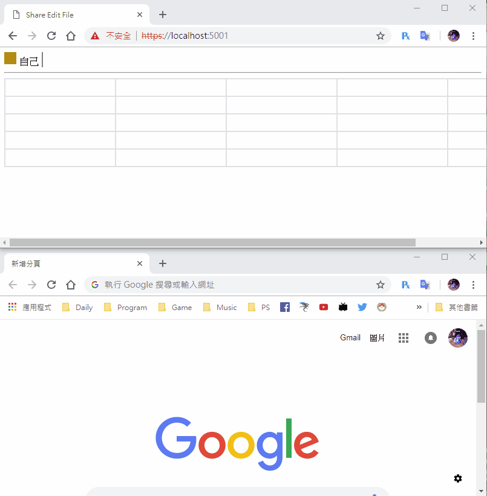

[鐵人賽Day23] 實作Web即時共同編輯文件 (3) - 加入上線清單
文章目錄
昨天我們做到能互相傳遞編輯的文字，今天我們要來實現上線的名單
建立上線名單
首先我們來做一下上線名單的樣式，Day11一個Select元素裝進去太醜了，這次我做成跟google一樣用橫的，放在表格的正上方，我要定義3個區塊的CSS，一個是上線列表、一個是代表的顏色區塊、一個是使用者。
.onlineList {
display: inline;
margin: 0px;
padding: 0px;
}
.userColor {
width: 20px;
height: 20px;
margin-right: 5px;
display: inline-block;
}
.user {
display: inline-block;
margin-right: 3px;
padding-right: 5px;
/* 分隔線 */
border-right: 2px gray solid;
}
html部分記得放在表格上面
<div id="userList" class="onlineList"></div>
<hr>
載入DOM
var userList = document.getElementById('userList');
後端部分
我們需要在後端控制加入和退出的動作，然後再把連線列表傳給所有人
修改FileService
首先先在FileService增加取得所有使用者、加入、移除使用者的功能，加入使用者AddUser在加入時，我們需要隨機產生一個代表色給他，主要注意的是這次的RemoveUser，不要使用LINQ的方式，改用foreach找出來user id，再移除他，移除後記得傳回名單，因為GetUserList是使用fileName的方式找出來，使用者離線時無法得知他用哪個文件。
public List<UserModel> GetUserList(string fileName)
{
var file = (from f in list where f.filename == fileName select f).FirstOrDefault();
return file.editor;
}
// 加入使用者
public bool AddUser(string fileName, string id)
{
// 找出哪個file
var file = (from f in list where f.filename == fileName select f).FirstOrDefault();
var userModel = new UserModel();
var rnd = new Random();
userModel.id = id;
// 顏色隨機產生
userModel.color = $"rgb({rnd.Next(0, 255)}, {rnd.Next(0, 255)}, {rnd.Next(0, 255)})";
file.editor.Add(userModel);
return true;
}
// 移除使用者
public List<UserModel> RemoveUser(string id)
{
List<UserModel> userList = new List<UserModel>();
foreach (var file in list)
{
// 找出哪個file
var editor = (from f in file.editor where f.id == id select f).FirstOrDefault();
if (editor != null)
{
file.editor.Remove(editor);
userList = file.editor;
}
}
return userList;
}
修改FileHub
Hub不需要建立新的方法，但我們要修改2個方法，一個是取得使用者列表的GetFile()，一個是斷線時的OnDisconnectedAsync()
public async Task GetFile(string fileName)
{
// 取得文件
var file = _service.GetFile(fileName);
// 加入使用者
_service.AddUser(fileName, Context.ConnectionId);
await Clients.Caller.SendAsync("ReceiveFile", file);
await Clients.All.SendAsync("ReceiveUserList", _service.GetUserList(fileName));
}
public override async Task OnDisconnectedAsync(Exception exception)
{
await base.OnDisconnectedAsync(exception);
// 移除使用者並重新傳回使用者的表單
await Clients.All.SendAsync("ReceiveUserList", _service.RemoveUser(Context.ConnectionId));
}
後端到這邊完成！！
更新上線名單
首先我們需要知道自己的connectionid是多少，但是signalR好像沒提供這方法，但是物件裡有找到，但是是完整的連線URL，我們需要抓內部的queryString，先建立抓queryString的方法，我們用正則的方法過濾
function getQueryStringByName(name) {
var result = connection.connection.transport.webSocket.url.match(new RegExp("[\?\&]" + name + "=([^\&]+)", "i"));
if (result == null || result.length < 1) {
return "";
}
return result[1];
}
建立更新上線名單的事件，先清空userList，再把元素塞進去，然後再填入名單時只要叫上方的函數驗證倒是自己的connectionid的話，名稱就改成顯示自己，由於我們沒有作相關的會員制度，所以這邊還沒有名字，所以改由connectionid來顯示。
connection.on("ReceiveUserList", function (userListData) {
userList.innerHTML = '';
for (var i = 0; i < userListData.length; i++) {
var user = document.createElement('span');
user.id = userListData[i].id;
user.className = 'user';
var userColor = document.createElement('div');
userColor.className = 'userColor';
userColor.style.backgroundColor = userListData[i].color;
user.appendChild(userColor);
if (getQueryStringByName('id') == userListData[i].id)
user.append('自己');
else
user.append(userListData[i].id);
userList.appendChild(user);
}
});
這樣就完成啦！
DEMO
